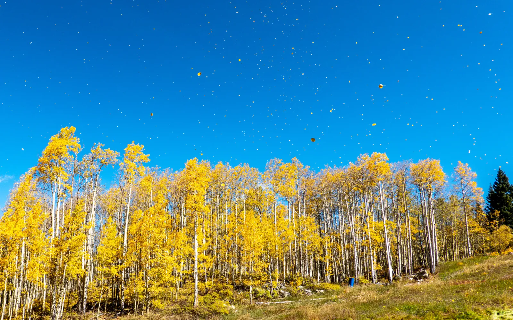

Shared Roots
The aspens across Colorado's high country go gold in late September, and my wife and I landed right in the middle of it on our honeymoon road trip. Around Aspen and Snowmass the color was only just arriving. From the road, the mountainsides were dark spruce with streaks of yellow running down through them, as if the slopes hadn't quite made up their minds. A gravel road curved toward a pink-tinged peak. We walked a trail between tall white trunks, with red shrubs glowing along its edges, and stopped at an old steel truss bridge over a river choked with boulders.
Aspens share roots, and I liked that thought on a honeymoon. A few days later we were in Crested Butte, where the cliff-faced mountain the town is named for rises over the valley. The sky was hazy that day and everything looked soft around the edges, but the slopes still glowed above a rust-colored meadow with a creek winding through it. Two mountain bikes were parked against a boardwalk railing with the best view in town.


The next day the aspens were at their peak. Whole groves stood solid gold against a blue sky, and loose leaves drifted through the air. Up on the ski mountain the aspens crowded right up to the lifts, and the empty chairs hung among them, waiting for snow. To chase the color, remember that it starts high and works its way downhill, so if you miss it in one valley, drop lower. The leaves will be gone within weeks, but next September the hillsides will show up right on schedule. I plan to as well.